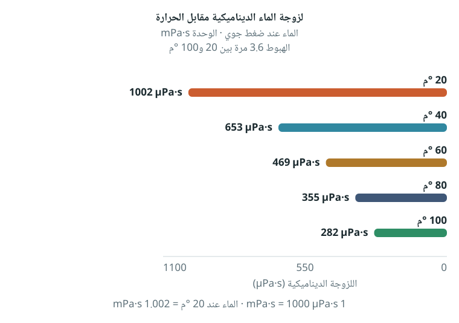

اللزوجة
Viscosity
مقاومة المائع الداخلية للتشوّه القصّي: إجهاد القصّ يتناسب مع تدرّج السرعة بمعامل μ. لزوجة الماء عند 20 °م تساوي 1.002 mPa·s وتهبط إلى 0.282 عند 100 °م، وهي التي تحدّد بطء العسل وشدّة هبوط الضغط في الأنابيب.
اللزوجة مقاومة داخلية يعارض بها المائع انزلاق طبقة فوق أخرى. تُقاس عمليًّا بإجهاد القصّ اللازم لإبقاء لوح متحرك فوق طبقة مائع بسماكة معروفة، فالنسبة بين الإجهاد وتدرّج السرعة هي المعامل μ، أي اللزوجة الديناميكية. وحدتها في النظام الدولي باسكال·ثانية، و1 Pa·s يساوي 1 kg/(m·s): إجهادًا مقداره نيوتن على متر مربع لتدرّج سرعة مقدار فرد على متر.
تنشأ المقاومة من تبادل الزخم بين الجزيئات. الطبقة الملاصقة للجدار ساكنة عمليًّا بشرط لا-انزلاق، والطبقة الأبعد أسرع، فتنقل التصادمات الجزيئية زخمًا من الأسرع إلى الأبطأ ويظهر ذلك إجهادًا على السطح. لذلك تبطؤ سرعة المائع قرب الجدار، ويأخذ توزيع السرعة شكلًا مكافئيًّا في الأنبوب الصفحي.
تعتمد اللزوجة على الحرارة في اتجاهين متعاكسين: في السوائل تضعف قوى التجاذب الجزيئي مع الحرارة فتنخفض اللزوجة، من 1.002 mPa·s عند 20 °م إلى 0.282 عند 100 °م؛ وفي الغازات يزداد التصادم الجزيئي فترتفع. ولهذا يفسّر انخفاض لزوجة الماء مع الحرارة جزءًا من تسارع دوران مضخة التدفئة في الشتاء.
كيف تعمل الظاهرة؟
تنتقل كمية الحركة في المائع اللزج بآليتين: تصادم جزيئي مباشر في السوائل شبه الساكنة، وحركة دوامية في الجريان المضطرب. عند جدار ساكن تتكوّن طبقة ملاصقة سرعتها صفر بسبب قوى الالتصاق بينها وبين السطح، ثم يتزايد الزخم مع البعد عن الجدار. الفرق في السرعة بين طبقتين متجاورتين يخلق معدّل تشوّه قصّي du/dy، والمقاومة الناتجة عنه هي τ = μ du/dy. هذا قانون نيوتن للزوجة، وهو تعريف تشغيلي: تُقاس μ بجهاز لوحين متوازيين، أو بلزوجة سقوط كرة حيث تتوازن قوة اللزوجة مع الطفو والوزن فتستقر الكرة على سرعة حدّية.
العلاقة بالأرقام
لزوجة الماء عند 20 °م تساوي 1.002×10⁻³ Pa·s، ولزوجته الحركية ν = μ/ρ = 1.004×10⁻⁶ m²/s. لوح مساحته 0.1 m² يتحرك بسرعة 1 m/s فوق طبقة ماء سماكتها 1 مم: du/dy = 10³ s⁻¹، وقوة القصّ F = μ A du/dy = 1.002×10⁻³ × 0.1 × 10³ = 0.10 N. وفي الأنابيب يتناسب هبوط الضغط مع μ خطيًّا ومع R⁴ عكسيًّا، فمضاعفة نصف القطر تخفض الهبوط 16 مرة عند ثبات التدفق. اللزوجة الحركية هي المستخدمة في رقم رينولدز، ووحدتها m²/s.
مفاهيم متقاربة
الخلط الأول: مساواة اللزوجة بالكثافة أو «الثقل». الزئبق أثقل من الماء بكثير ولزوجته أقل منه، والزيت أخف من الزئبق وألزج منه؛ فالكثافة قياس كتلة في الحجم، واللزوجة قياس مقاومة تشوّه. الثاني: الظن أن الحرارة تخفّض اللزوجة دائمًا؛ هذا صحيح للسوائل ومعكوس في الغازات، لأن آلية النقل هناك تصادمية لا تجاذبية. الثالث: الخلط بين الديناميكية μ والحركية ν؛ الأولى تسند الإجهاد إلى التدرّج، والثانية تسنده إلى الكثافة، ولا تُقارن بهما سوائل مختلفة بلا تحويل صريح.
حدود التطبيق
قانون نيوتن للزوجة يفترض علاقة خطية بين الإجهاد ومعدّل القصّ، وهذا لا يصح للسوائل اللانيوتونية: الدم واللبن والعجائن ذات لزوجة ظاهرية تتغيّر مع معدّل القصّ، وقد تسيل عند إجهاد حدّي فقط. وشرط لا-انزلاق يفشل في الغازات المخلخلة عندما يقارب متوسط المسار الحر سماكة الطبقة، وفي الأسطح فائقة الكراهية للماء. كذلك تتغيّر اللزوجة مع الضغط في أفلام التزييت عالية الحمل، ومع الزمن في الزجاج والبوليمرات، فلا تكفي قيمة جدولية واحدة لحساب دقيق.

| الكمية | القيمة | المصدر |
|---|---|---|
| اللزوجة الديناميكية للماء عند 20 °م | 1.002 mPa·s | [1] |
| اللزوجة الديناميكية للماء عند 100 °م | 0.282 mPa·s | [1] |
| اللزوجة الحركية للماء عند 20 °م | 1.002 mm²/s | [1] |
| وحدة اللزوجة الديناميكية | 1 Pa·s = 1 kg/(m·s) | [3] |
المصادر
- 1 Water — Dynamic and Kinematic Viscosity — The Engineering ToolBox. www.engineeringtoolbox.com/water-dynamic-kinematic-viscosity-d_596.html · اطُّلع عليه 2026-11-16
- 2 University Physics Volume 1 — 14.7 Viscosity and Turbulence — OpenStax. openstax.org/books/university-physics-volume-1/pages/14-7-viscosity-and-turbulence · اطُّلع عليه 2026-11-16
- 3 SI Units — units with special names and symbols — NIST Physics Laboratory. physics.nist.gov/cuu/Units/units.html · اطُّلع عليه 2026-11-16
استشهد بهذا المصطلح
الصيغتان مبنيتان من بيانات الصفحة نفسها: العنوان والتاريخ ورابط النسخة المنشورة.
اللزوجة — Viscosity. (2026). ديوان المعرفة — انفراد. https://infiradev.com/diwan/terms/viscosity.html
@misc{viscosity2026,
title = {اللزوجة},
titleaddon = {Viscosity},
howpublished = {{ديوان المعرفة — انفراد} — مرجع علمي عربي},
year = {2026},
url = {https://infiradev.com/diwan/terms/viscosity.html},
urldate = {2026-11-16},
note = {مراجعة علمية: مراجعة آلية — ديوان المعرفة (روابط المصادر + عقد المحتوى + وجود الرسم) 2026-11-16}
}
راجعه: مراجعة آلية — ديوان المعرفة (روابط المصادر + عقد المحتوى + وجود الرسم) 2026-11-16 · 2026-11-16 · آخر تحديث 2026-11-16